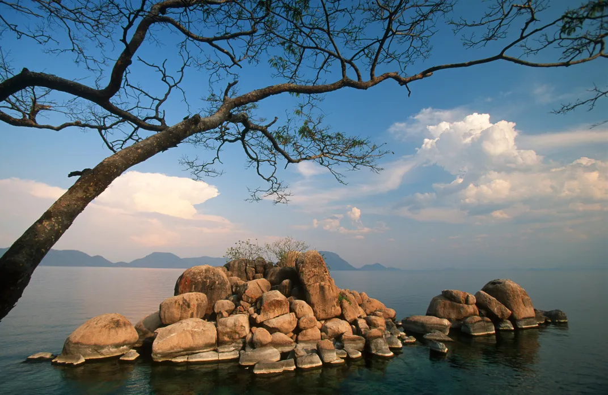
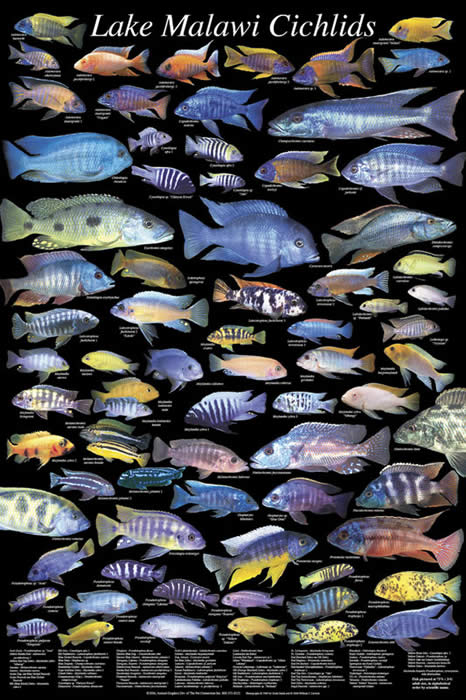

<!DOCTYPE html>
<html lang="en">

</html>

<head>
    <meta charset="utf-8" />
    <title>Location and Temperment</title>
    <link rel="stylesheet" type="text/css" href="css/location-temperment.css">
    <meta name="viewport" content="width=device-width" />


</head>

<body>
    <header>
        <div class="whole">
            <div class="heading1">
                <h1>Location</h1>
            </div>
            <div class="heading2">
                <h1>Temperment</h1>
            </div>
        </header>


        <div class="image1"></div>
        <div class="image2"></div>
        <article>
            <div class="container1">
                <ul>
                    <h2>
                        <p>Lake Malawi</p>
                    </h2>

                    <h4>
                        <li>Lake Malawi formed in a valley where the African tectonic plate is in the process of
                            splitting
                            in two</li>
                        <li>It is the fifth largest fresh water lake in the world by volume, the ninth largest lake in
                            the
                            world by area—and the third largest and second deepest lake in Africa</li>
                        <li>Lake Malawi is home to more species of fish than any other lake in the world, including at
                            least
                            700 species of cichlids.</li>
                        <li>The lake also attracts hippos, baboons, warthogs, many species of birds, and occasionally
                            even
                            elephants</li>
                        <li>Area: 11,429 mi²</li>
                        <li>Length: 360.4 mi</li>
                        <li>Width: 46.6 mi</li>
                        <li>Surface elevation: 1,640ft</li>
                    </h4>
                </ul>
            </div>
        </article>
        <article>
            <div class="container2">
                <ul>
                    <h2>
                        <p>Temperment</p>
                    </h2>
                    <h4>
                        <li>Mbuna cichlids are known for being territorial and aggressive fish. They are also highly
                            intelligent and can recognize their owners and other fish in their environment.</li>
                        <li>For their size they are one of the most aggressive fish out there</li>
                        <li>Mbuna are hardy, easy to keep, easy to breed, and widely available.</li>
                        <li>Mbunas are not schooling fish, but they are best kept in groups of 4 or more. You should
                            never
                            keep Mbunas in couples</li>
                        <li>The are many different temperments among the hundreds of different species of Mbuna, most
                            being
                            territorial causing their aggression.</li>
                    </h4>
                </ul>
            </div>
        </article>
</body>
<footer>
    <div class="pageback"><a href="about-history.html">Back a page</a></div>
    <div class="home"><a href="index.html">Home</a></div>
    <div class="nextpage"><a href="hobby-care.html">Next page</a></div>
</footer>
</div>


